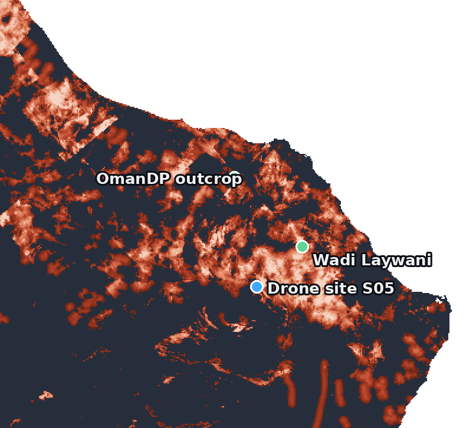
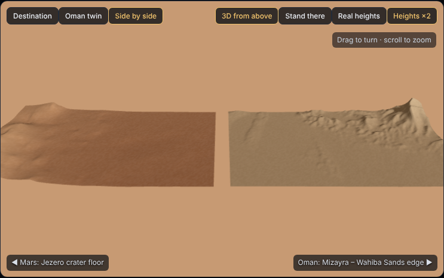
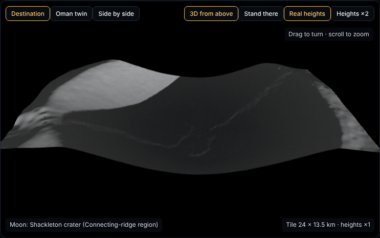
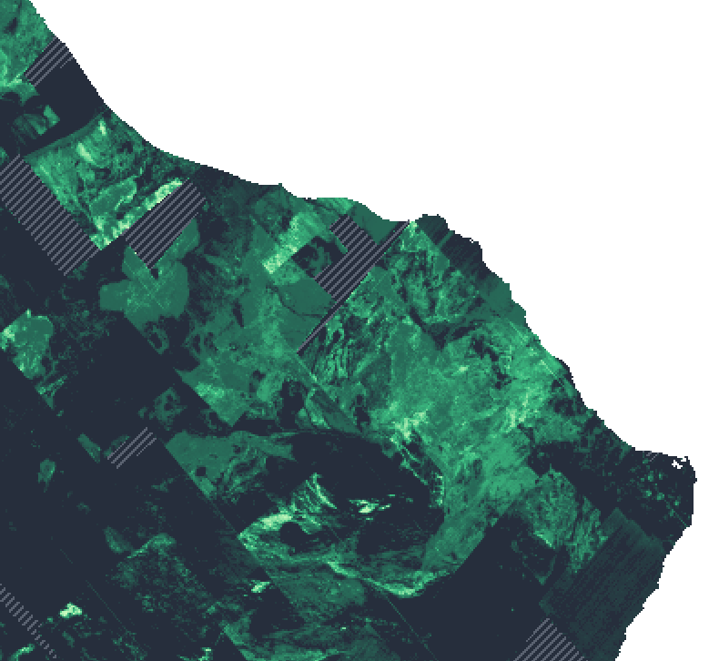
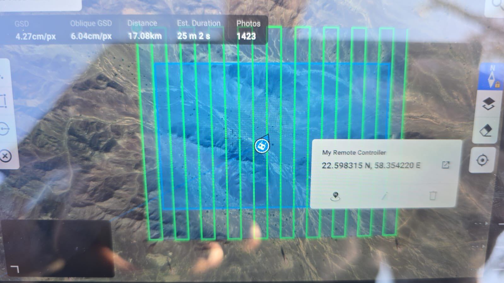

NASA Space Apps 2026 · Al Bidiyah, Oman
Oman Analog Atlas — finding where Earth rehearses the Moon and Mars
Adil Al-Kalbani · GIS analysis | Mazin · Web platform | Luqman · Drone & team lead
Ubar, 1992
Why we are called UBAR
Space Shuttle radar looks under the Dhofar sand
Landsat caravan tracks lead to Ubar, at Shisr
UBAR uses NASA data again: to find Oman’s Moon and Mars twins
Ubar (Shisr), Dhofar
The challenge
Slope · roughness · relief
Heat swings · wind · bare ground
Water-formed minerals
Reachable · safe · remote
A real analog must match all of these at once — nobody had scored all of Oman.
STEP 1 / 6
Moon, Mars and Oman measured from orbit
How we did it
| Source | What it measures |
|---|---|
| LRO · LOLA | Moon terrain, 80 m |
| MGS · MOLA | Mars terrain, 463 m |
| Copernicus DEM | Oman terrain, 90 m |
| Terra/Aqua · MODIS | Day–night heat, plant cover |
| ISS · EMIT | Surface minerals |
| NASA POWER | Wind |
| OpenStreetMap | Roads and villages |
STEP 2 / 6
Everything an analog must match, mapped across Oman
How we did it
Slope · Roughness · Relief
Day–night ΔT · Yearly ΔT · Wind
Plant cover · Old riverbeds
Minerals (EMIT)
Access, away from villages
STEP 3 / 6
Each Oman cell vs the real landing site → match 0–100%
How we did it
Target: Jezero floor, 1.5° slope
Close → near 100%
Far → near 0%
Targets are measured on the real Moon and Mars sites, at the same scale as Oman.
STEP 4 / 6
Experts decide what matters most for each mission
How we did it
STEP 5 / 6
Weighted matches added up for every 90 m cell
How we did it

Score = Σ weight × match
38 million cells, 4 missions. The brightest places are Oman’s best twins — along the ophiolite.
STEP 6 / 6
Known analogs, Utah MDRS and a drone flight
How we did it
Where each one ranks among all of Oman · Mars science score
50th · an average place in Oman
100th
Real targets, real terrain

Jezero floor, where Perseverance landed · slope 1.5°, relief 33 m per km

Shackleton crater, lunar south pole · 4 km deep walls. Oman can’t copy it, and the site says so.
Rock chemistry from orbit
NASA’s EMIT spectrometer maps surface minerals from the ISS. We read 68 EMIT scenes over Oman.
Serpentine, magnesite and Fe-Mg clays — minerals that form when water meets rock, the chemistry Perseverance hunts at Jezero — light up the Samail ophiolite.
Green: water-formed minerals detected · hatched: not imaged by EMIT

Field check · 15 Nov
Satellite prediction at S05 · click a card to reveal what we found
0.47 km² · 1,423 photos · 4.3 cm per pixel

Impact
Evidence-based sites, in minutes
A shortlist for the next AMADEE-style expedition
See Mars, then visit its twin
Gravity, thin air, polar cold can’t be copied · Mars terrain data is 463 m
Drone 3D models · cleaner riverbeds · more EMIT · open data
Ubar, 1992